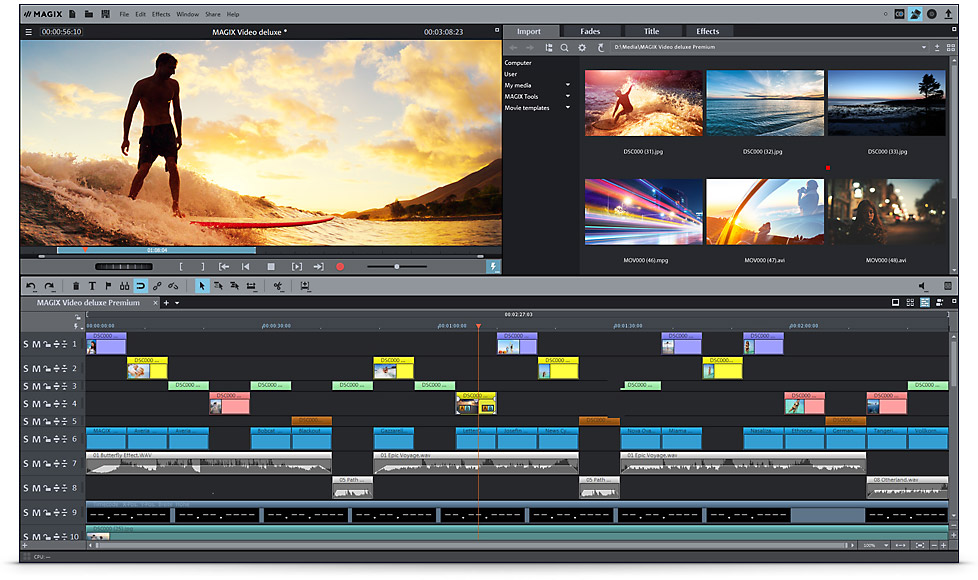
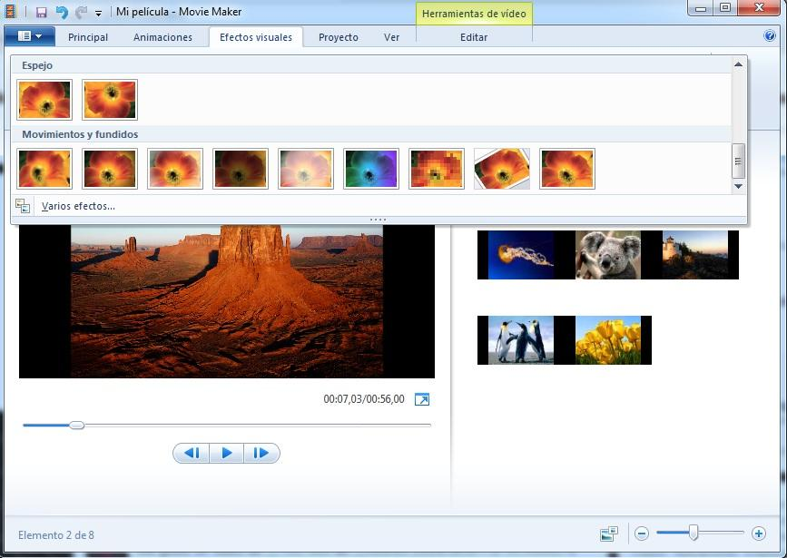

Fase inicial y dos.En casa.
Como os indicaba en el párrafo anterior, sois vosotros los encargados de confeccionar, mediante la realización de la tarea cinco del curso, el material que van a utilizar vuestros alumnos en casa (grabación en vídeo en la que se os vea a vosotros explicando los contenidos) para trabajar los contenidos referidos al estudio de la oración compuesta: Yuxtaposición, Coordinación y Subordinación.
En estos momentos, os presento una software multimedia como es MAGIX para confeccionar un VÍDEO de forma completa con la versión de prueba (30 días gratis).
Magix Video Deluxe Premium os va a permitir realizar vuestra presentación en vídeo incluyendo una gran variedad de efectos como son las transiciones, la música así como el poder texto en la parte del vídeo que consideréis más oportuno.

Existe otra posibilidad para poder crear vuestros vídeo haciendo uso del editor de video Windows Movie Maker gracias al cual podéis subir vuestras grabaciones realizadas, por ejemplo, con vuestro móvil o efectuarlas desde la cámara Web de vuestro ordenador. Del mismo modo, podéis combinar 2 vídeos en la misma pantalla, grabar vuestros audios, incluir música, transiciones.
Todo ello, podéis llevarlo a la práctica si os descargáis la versión gratuita en el siguiente enlace.
La diferencia entre MOVIE MAKER y MAGIX es que, en este último, se pueden incorporar IMÁGENES, ESQUEMAS ETC. a la vez que se sigue visualizando el vídeo con normalidad. En MOVIE MAKER, por el contrario, se corta el vídeo, se introduce la imagen, y vuelve a continuar el vídeo.
En el siguiente tutorial, donde también se ofrece la posibilidad de descargar Movie Maker, se os presentan todos los pasos a seguir para elaborar vuestro vídeo Movie Maker

Además de la visualización del vídeo, que como máximo debe durar 10 minutos, se puede proponer al alumnado que realice las siguientes actividades interactivas de carácter biertos presentes en Internet: